If you chose to make a new model, then follow these instructions, and refer back to the Sliding Linecar for more detail. Since all three parts are simple, proceed to make the body, which we will call Main, some reasonable length, width, and height. I have chosen to again texture it yellow. On top of this, about in the center, make a slightly wider elevator or Tower. It will raise up toward the trolley wire when the P key is toggled. I again colored mine red. Then, the third and final part is the Gangplank, here colored turquoise, which will rotate out to the side after the Tower has finished rising upwardly.
Just as with the Sliding Linecar locomotive, set the origin so that the Main is two or three feet above the origin, and the axes of the Main are on the origin. The axes of the Tower may be conveniently left at the center of that part. But the axes of the Gangplank need to be moved to the center of rotation, so once you have it constructed, and selected, hold down the SHIFT key and using the Move tool, shift the axes along the z axis till it is toward one end. Here is a side view of what we have in TSM:
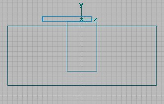
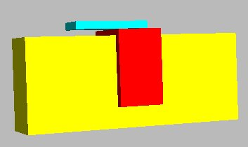
Now we need to take care of some nomenclature and other housekeeping chores, so let's go to Project Properties and once again pick an Electric locomotive a name such as Linecar-Rotate, and the number of animation frames, again 10.
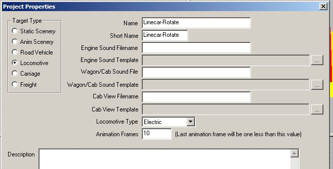
We need to pick names for the parts that will be recognized by the P key, so again I have picked PantographBottom1 for the Tower, and PantographTop1 for the Gangplank. And as noted in the Sliding Linecar, any of the other Pantograph Train Names could have been chosen, without regard to whether on top or not. The Part Parent of both is Main, which happens to be the yellow body.
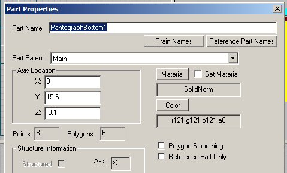
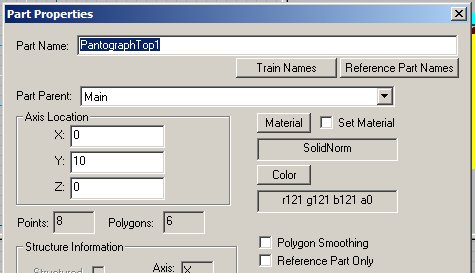
If you have not already done so, now is a good time to texture your three pieces and save your work as well. Let's move on to animation.
Since the beginning frame of animation controlled by the P key is the non-powered frame, we will want the Tower to be up, and the Gangplank rotated outwardly in Frame 0, and down and parallel in the last Frame. So, lets follow the same steps as with the Sliding Gangplank Linecar, and press the "Ani" button in the Menu.
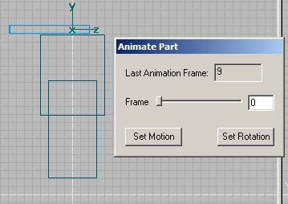
Notice we again have 9 as the Last Animation Frame, and we want to set the first one, which will be Frame 0. So make sure you have rotated the Gangplank outwardly, and then press Set Rotation. I also pressed Set Motion, since this part has both rotation and motion. I am not sure you need to Set Motion for Frame 0, but I did anyway. Now we want the rotation to be fairly slow, so let's move on to Frame 5. Here we will rotate the Gangplank back to a position parallel to the Main, but still up in the air. Once again press
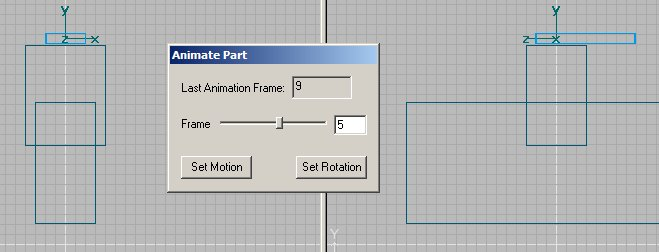
both Set Motion and Set Rotation, and the Sim will interpolate the intermediate Frames. Then lower the Gangplank to the bottom position, and move the slider over to the last frame which is Frame 9. Press Set Motion and Set Rotation. Again I am not certain that you needed to press the rotation button as there is no change in the rotation after Frame 5, but anyway, I did. So here is a photo of Frame 9.
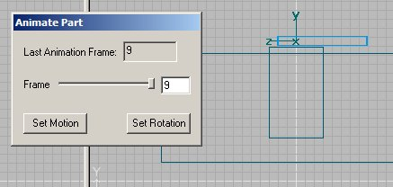
You need to make the usual animation for the Tower, except just like the Sliding Linecar, it has no rotation, only up and down motion so you will only press the Set Motion button.
Check out the numbers in the Part Animation window (if you have forgotten how to get there then you need to reread Section 1). Looking at the Gangplank, you will find it has numbers for both Motion and Rotation. There is no difference between Frames 0 and 5 in the Motion Keys, because the Gangplank is not moving linearly, but is only rotating. And you can see that is so by looking at Frames 0 and 5 of the Rotation Keys. There you see that the Gangplank has rotated from 90° to 180°. Then between Frames 5 and 9 in the Motion Keys, you will see that the Gangplank has lowered from 20.7 to 15.7.
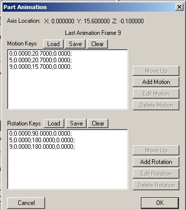
Now check out the Part Animation window for the Tower. Since there is no rotation, there should be nothing in the Rotation Keys, and numbers only in the Motion Keys. If you are lost, then reread the instructions in Section 3, as the concepts are the same (in fact identical for the Tower) and the added wrinkle is simply the rotation of the Gangplank seen between Frames 0 and 5. Now look at the Part Animation windows, and you should find exactly what I am talking about, when you compare the Gangplank above, and the Tower below.
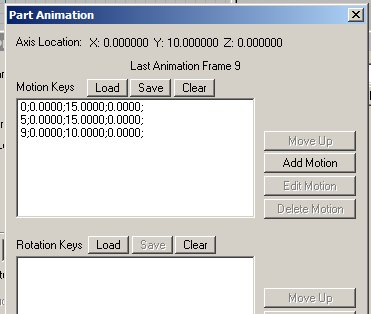
And that is exactly what we have. So now is the time to save everything again, and then to Create the Train Simulator Object. By now you know how to check out what you should have in the Folder and Filename, as well as the Processing Options. So do the
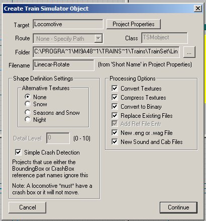
necessary, and then go to the Consist Editor and make a new consist for your Rotating Linecar. Then go to Train Sim, and observe your new animated Linecar. Here is what you should see, when you press the "P" key:
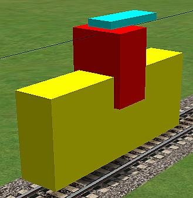
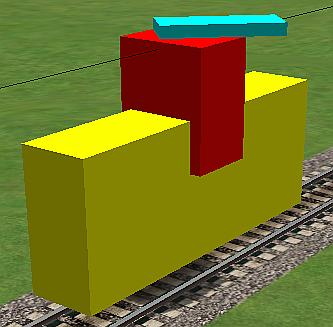
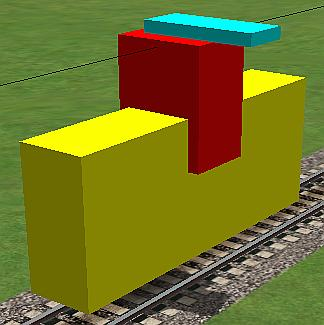